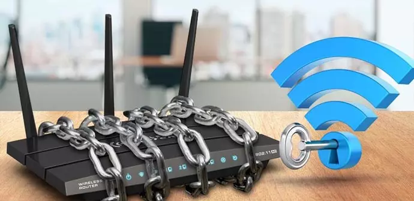

Herramientas de Seguridad

- Encriptación WPA3/WPA2: Utiliza el último estándar de encriptación WPA3 si es posible, o al menos WPA2. Evita usar WEP, ya que es vulnerable.
- Firewalls: Configura firewalls en tu router y en los dispositivos que lo permitan para filtrar el tráfico no deseado.
- Contraseñas Fuertes: Utiliza contraseñas complejas y únicas tanto para tu red inalámbrica como para el acceso al router.
- VPN: Implementa una red privada virtual (VPN) para cifrar todo el tráfico de la red y protegerla contra escuchas no autorizadas.
- Actualizaciones de Software: Mantén actualizado el sistema operativo y el software de tus dispositivos para beneficiarte de las últimas correcciones de seguridad.